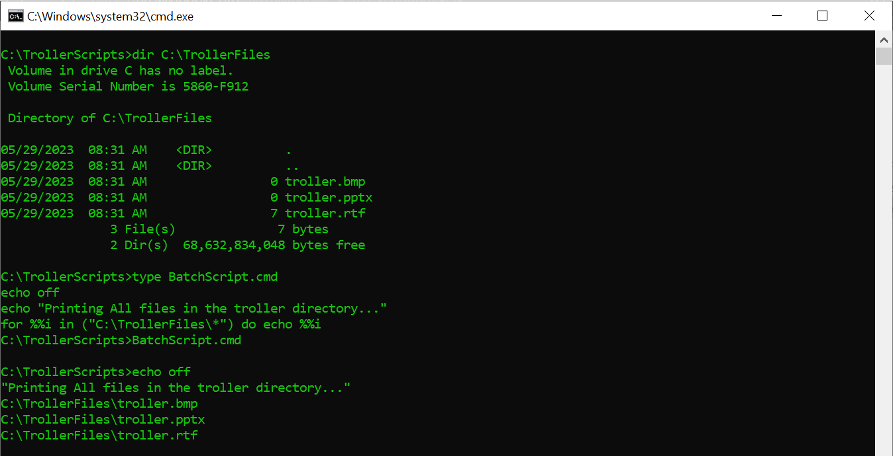
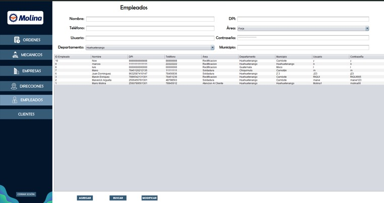
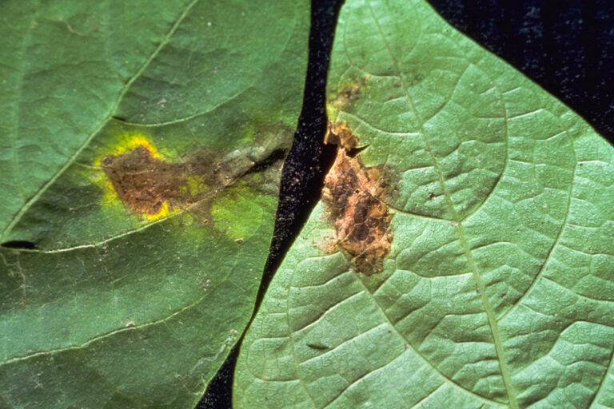

MIS PROYECTOS

CMD
Sistema similar a una linea de comandos, permite ejecutar comandos básicos como listar archivos, crear carpetas y más. Un proyecto sencillo pero útil para aprender sobre la manipulación de archivos y directorios en Java.
Java

Reconstructora Molina
Aplicación de escritorio para una empresa de reconstrucción de motores, mostrando su inventario, manejo de trabajos y datos de de contabilidad.
Java
PostgreSQL

Clasificador de Enfermedades en Plantas
Aplicación de visión por computadora que identifica enfermedades en hojas de plantas utilizando modelos de aprendizaje automático.
Python
TensorFlow
Keras
OpenCV